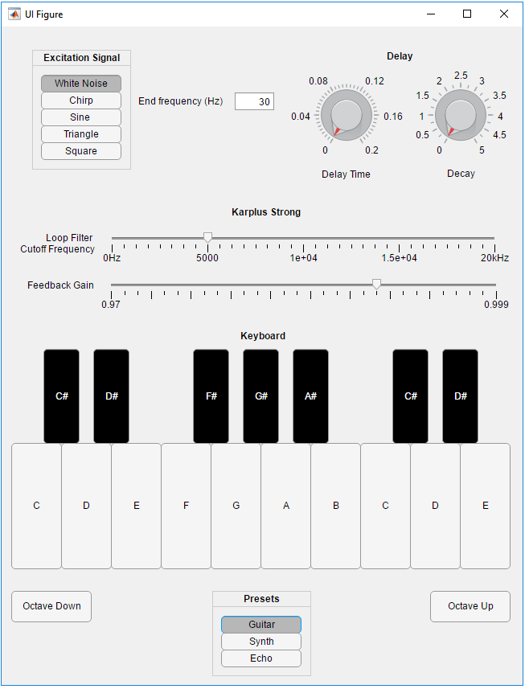

Physical modelling synthesis involves simulating real world physics
using mathematical equations in order to synthesize sounds. All musical
instruments are vibrations caused by an exciter
and can be
described with a mathematical model. By recreating the physical
properties of an instrument and how we interact with them, we can
create sounds which resemble the original instrument.
Benefits and Drawbacks
Physical modelling synthesis allows for a large variety of sounds to be
produced. By varying the parameters needed to defined in the model (E.g.
pick position of a string, or the level of damping of a drum),
we can achieve all sorts of different and interesting timbres. We can
also produce sounds that may not be possible in real life. For example,
we aren't subject to real life issues such as strings snapping when
pulled too far or absurdly large drum membranes. However, compared to
sampling synthesis, physical modelling is considered inferior in terms
of accurately recreating the original instrument due the difficulties
involved in describing complex models of real instruments. It's also
more CPU intensive. Essentially, we are sacrificing a more accurate
sounding model for one that can create more diverse, varied and
arguably creative sounds!
The Karplus Strong Model
Firstly, let's look at how a typical string works. Plucking a
string induces a high amount of energy in the string and causes it to
vibrate, creating a sound full of different frequencies and overtones.
The fundamental frequency of this sound is dependent on the length,
thickness and mass of the string. The string then starts to lose energy
due to the string tension and air resistance. Some frequencies will die
out faster than others, depending on factors such as the material of
the string, or the body of what it's attached to. The Karplus Strong
model essentially tries to replicate this [1].
Figure 1 - Diagram of the Karplus Strong Model
The model begins with white noise as an "excitation signal", the
sample length (L) of which is dependent on the desired fundamental
frequency. This is then outputted as well as fed into a delay line, of
which the length is also dependent on the fundamental frequency. Lastly
the signal is put through a low pass filter before being mixed back
into the output.
The white noise excitation signal serves to replicate the initial pluck
of a string, as the randomness of white noise produces the many
different frequencies initially created. To find the required sample length of
this signal, we'd take the sample frequency and divide it by the
desired fundamental frequency to get the required sample length (for
example, if we wanted the note A3, which is at 220Hz, we'd divide the
sampling frequency, often 44.1 kHz, by this to get a sample length of
200 samples).
The delay line feeds the signal that's delayed by L samples back, so
that the same signal is played straight after the initial excitation
signal. Now the output is just the same signal being outputted repeatedly,
so the output will have a fundamental frequency of the length of the
excitation signal L.
Figure 2 - The output waveform
However, as shown in figure 3, higher frequencies tend to die out
faster that lower frequencies, which is achieved by the lowpass filter
after the delay line.
Audio 1 - A guitar string
playing A2 (110Hz)
Figure 3 - Spectrogram of a recorded guitar string played A2 (110Hz)
The resultant output is a sound that roughly resembles a
plucked string.
The MATLAB Application

Figure 4 - The MATLAB App GUI
The MATLAB app allows you to easily use the Karplus Strong model and
create your own sounds. It gives you the option to choose the
excitation wave, the cut-off frequency of the lowpass loop filter, and
choose the fundamental frequency of the sound output using a
keyboard.
Additional features include feedback gain, which essentially does
the same job that the lowpass loop filter does but across all
frequencies. This gives the option to have a shorter output
which doesn't ring out as much. There's also the option to add a delay
effect, allowing the user to add some constructive/destructive
interference with a short delay setting, or simply have a nice echo
with a long delay setting!
To view code, open KarplusStrongApp.mlapp from within MATLAB.
The Code
Fundamental Frequency
Firstly, a variable is initialized containing the value 110. This is
the initial fundamental frequency used. Each key on the keyboard has
a call-back function, which changes the fundamental frequency relative
to the initial value of 110 Hz using equal temperament [2]. It'll then
run the Karplus Strong
Algorithm using this fundamental frequency. The octave up and down
buttons changes the frequency that the notes are relative to (Multiply
by two for an octave higher, divide by two for an octave lower).
octave = 110; %
Initial Octave - A2
% Button
pushed function: AButton function note_A(app, event) f0 = app.octave; karplus(app,
f0); end
% Button
pushed function: AButton_2 function
note_A_sharp(app, event) f0 = app.octave
* 2.^(1/12); karplus(app,
f0); end
% etc
% Button
pushed function: OctaveDownButton function OctaveDown(app, event) app.octave =
app.octave / 2; end
% Button
pushed function: OctaveUpButton function OctaveDown(app, event) app.octave =
app.octave * 2; end
Excitation Signal
To generate the desired excitation signal, we have a function which
outputs the signal depending on which button is chosen on the button
group.
fs = 44100; % Sample Rate
function output = excitationSignal(app, L, f0) t = 0:L; % Create vector of values for string % If statement for button group if app.WhiteNoiseButton.Value
== true
output = (rand(1, L) - 0.5); % Create white noise elseif app.ChirpButton.Value
== true
output =
chirp(t/(app.fs/f0),0,L/(app.fs/f0),app.EndfrequencyHzEditField.Value)
/ 2; % Create chirp which goes
from 0Hz to what is defined by the user in the edit field elseif app.SineButton.Value ==
true
output = sin(2*pi*(t/(app.fs/f0))) / 2; % Create one period of a sine wave elseif
app.TriangleButton.Value == true
output = sawtooth(2*pi*(t/(app.fs/f0))) / 2; % Create one period of a triangle wave elseif app.SquareButton.Value
== true
output = square(2*pi*(t/(app.fs/f0))) / 2; % Create one period of a square wave end
end
The Delay Line Loop
The delay line loop exists as a separate file as a function (loop.m). The
function takes the excitation signal to use in the delay line. It then
outputs the last sample in the delay line and shifts the delay line one
sample across whilst moving the last sample to the beginning of the
line. This repeats for as long as we want the note length to be (though
it's fixed at 3 seconds in the app to prevent long loading times).
function
output = loop( delayLine, noteLength, gain, fc, fs)
%This
function outputs a karplus strong note sound based on input %parameters
- %karplus(delay
line/excitation signal, length of sound, feedback gain, cut-off
frequency)
% Get
length of input delay line L = length(delayLine);
% Output output = zeros(1,L);
for n = 1:noteLength % Set current output sample to the
final value in the delay line output(n) =
delayLine(L); % Shift delay_line wave one step right delayLine =
[filterOutput, delayLine(1:L-1)]; end
Lowpass filter and gain filter
The lowpass filter is was applied using the differential
equation and
filter co-efficients for a 2nd order filter given by Udo Zolzer in his
book DAFX: Digital Audio Effects[3]. This would be used on the last sample
of the delay line before it's moved to the beginning of the line, and
would be implemented by keeping a record of the last two input and
output samples in arrays to use in the differential
equation.
The feedback gain is simple: Multiply the last sample in the delay line
by a value less than one before moving it to the beginning of the delay
line. function
output = loop( delayLine, noteLength, gain, fc, fs)
%This
function outputs a karplus strong note sound based on the input %parameters
- %karplus(delay
line/excitation signal, length of sound, feedback gain, cut-off
frequency)
% Get
length of the input delay line L = length(delayLine);
% Arrays to
store previous filter inputs and outputs x = [0 0]; y = [0 0];
for n = 1:noteLength % Set current
output sample to the final value in the delay line output(n) =
delayLine(L); % Low Pass Filter filterOutput =
b0*delayLine(L) + b1*x(1) + b2*x(2) - a1*y(1) - a2*y(2);
% Feedback gain filterOutput =
filterOutput * gain;
%Save current
filter input and output values to use as the "previous" values for the
next loop x =
[delayLine(L) x(1)]; y =
[filterOutput y(1)]; % Shift
delay_line wave one step right delayLine =
[filterOutput, delayLine(1:L-1)]; end
Delay Effect
The delay effect can be applied on the final output as a feedback comb
filter once we have the filter co-efficients for the transfer function.
Figure 5 - Feedback comb filter diagram
y[n] = x[n] = +
gy[n-M]
We then apply
the z transform to get our transfer function and co-efficients
Y(Z) = X(Z) +
gY(Z)*Z^(-M)
Y(Z)/X(Z) =
Z^M/(Z^M - g)
T = 1/44100; % Sampling interval
% Delay Effect - Comb Filter
Tc = app.DelayTimeKnob.Value; %
Delay in seconds
M = Tc/T; % Number of sampling
intervals
RT60 = app.DecayTimeKnob.Value; %
Time required for echoes to decay by 60dB
g = 0.001^(Tc/RT60); % Adder
b = [1 zeros(1, round(M))]; %
Filter Numerator
a = [1 zeros(1, round(M)-1) -g]; %
Filter Denominator
if app.DelayTimeKnob.Value>0
% Exception for when delay time is
set to 0, as this causes no output
out = filter(b, a, out); % Apply filter end
Analysis
When the model
outputs sound, 3 graphs are given so that we can analyse the output (as
well as check that the model is working!). The first graph is the time
domain graph of the initial excitation signal. The second is a time
domain graph of the output. The third gives us a spectrogram/frequency
analysis of the output.
Guitar Preset
Audio 1 - Guitar Preset A2 (110Hz)
Figure 6 - Guitar Preset Analysis - A2 (110Hz)
This preset attempts to replicate the
guitar from Audio 1. It uses white noise as the excitation signal, as
used in the original Karplus Strong model. The lowpass cut-off
frequency
is set at 4kHz, replicating the spectrogram of a real
guitar string in figure 3. The feedback gain is set fairly high to
emulate a string ringing out. It uses no delay.
Synth Preset
Audio 3 - Synth Preset A2 (110Hz)
Figure 7 - Synth Preset Analysis - A2 (110Hz)
This preset gives a more typical synth sound, using a square wave as
the excitation signal. It uses a fairly high lowpass cut-off frequency
of 15kHz and a low feedback gain of 0.97. With such a such cut-off
frequency, more of the square wave's natural timbre is present, as shown on the spectrogram. No delay was used.
Echo Preset
Audio 4 - Echo Preset A2 (110Hz)
Figure 8 - Echo Preset Analysis - A2 (110Hz)
This preset used a chirp excitation wave with a start frequency of 0Hz
to an end frequency of 30Hz. This uses a delay of 0.1 seconds (which
we can see on the spectrogram) and a decay time of 5 seconds. The time
domain response is quite interesting, as we can see some constructive interference involved with each delay.
Metallic Preset
Audio 5 - Metallic Preset A2 (110Hz)
Figure 9 - Metallic Preset Analysis - A2 (110Hz)
This preset has a triangle excitation waveform, a lowpass cut-off
frequency of 5kHz, feedback gain of 0.995, a short delay time of 0.02
seconds and decay time of 2 seconds. Once again, there's a lot of
constructive/destructive interfence due to the delay effect. It's also
interesting to note that the higher frequencies above the 5kHz cut-off
are still somewhat present for the first 0.5 seconds or so. This is
likely due to the fast delay time of the delay effect retaining the
higher frequencies and feeding them back in.
Conclusions and Improvements
The system does a fairly good job of producing varied and interesting sounds
that aren't limited to a guitar pluck. However, there're
improvements that can be made. You could look into
specific harmonics are damped in a real guitar, rather than simply
using a lowpass filter. Work on this was done by Karjalainen, Valimaki
and Janosy which led to a loop filter that created a very realistic
guitar sound [4]. The extended Karplus Strong Algorithm could also be
explored [5].
Figure 10 - The extended Karplus Strong Algorithm [4]
Word Count: 2000 words.
References
[1] Karplus, K. and Strong, A. (1983). Digital Synthesis of Plucked-String and Drum Timbres. Computer Music Journal, 7(2), p.43
[2] Pages.mtu.edu. (n.d.). Scales: Just vs Equal Temperament. [online]
Available at: https://pages.mtu.edu/~suits/scales.html [Accessed 19
Apr. 2018].
[3] Zölzer, U. (2011). DAFX - digital audio effects. Chichester: John Wiley & Sons.
[4] Karjalainen, M., Välimäki, V. and Jánosy, Z. (1993). Towards
High-Quality Sound Synthesis of the Guitar and String Instruments.
[online] Users.spa.aalto.fi. Available at:
http://users.spa.aalto.fi/vpv/publications/icmc93-guitar.htm [Accessed
19 Apr. 2018].
[5] Smith, J. (2011). Physical audio signal processing. [Lexington]: W3K Publishing.
[6] Sanders, S. and Weiss, R. (n.d.). Synthesizing a Guitar Using
Physical Modeling Techniques. [online] Ee.columbia.edu. Available at:
http://www.ee.columbia.edu/~ronw/dsp/ [Accessed 19 Apr. 2018].
[7] SoundBridge. (2017). Physical Modelling Synthesis - SoundBridge.
[online] Available at:
https://soundbridge.io/physical-modelling-synthesis/ [Accessed 19 Apr.
2018].
[8] Rahtz, M. (2015). Karplus-Strong String Synthesis. [online]
Amid.fish. Available at: http://amid.fish/karplus-strong [Accessed 19
Apr. 2018].